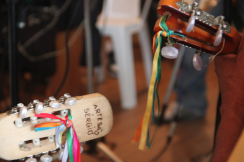

O fandango encontrado na região possui uma estrutura bastante complexa, envolvendo diversas formas de execução de instrumentos musicais, melodias, versos e coreografias.
A formação instrumental básica do fandango normalmente é composta por dois tocadores de viola, que cantam as melodias em intervalos de terças, um tocador de rabeca, chamado de rabequista ou rabequeiro, e um tocador de adufo ou adufe. O violão é usado em vários grupos de Cananéia e Iguape, assim como na Barra do Ararapira (Ilha do Superagui - Guaraqueçaba/PR). O cavaquinho também é bastante comum no estado de São Paulo e na Barra do Ararapira. Já o bandolim é encontrado apenas no grupo Violas de Ouro de São Paulo Bagre (Cananéia/SP), utilizando, no entanto, uma afinação completamente diferente da usual.Também são encontrados outros instrumentos de percussão como o pandeiro, surdos, tantãs, entre outros. O machete, instrumento de cordas bastante utilizado no passado para a iniciação musical dos fandangueiros por ser mais simples e menor que a viola, é bastante raro atualmente.
Cada forma musical, definida pelos mestres violeiros, é chamada de marca ou moda, dependendo da região, e possui toques e danças específicas, que se dividem, basicamente, em duas categorias: os valsados ou bailados - dançados em pares por homens e mulheres, com ou sem coreografias específicas - e os batidos ou rufados. Nos batidos, os homens utilizam tamancos feitos de madeira resistente, como canela ou laranjeira, intercalando palmas e tamanqueando no assoalho de madeira, de acordo com a marca ou moda executada. As mulheres acompanham os dançadores em coreografias circulares, onde os pares vão traçandofiguras, sendo a mais comum a de um oito, no sentido anti-horário. A maior parte dos grupos, atualmente, possui um mestre marcador, ou mestre-de-sala, responsável por guiar os demais dançadores e evitar que se cometa balaio, como eram chamados pelos antigos os erros nas danças.
A grande maioria dos instrumentos encontrados no fandango são de fabricação artesanal, tendo a caixeta ou caxeta (Tabebuia cassinoides, D.C.) como madeira mais utilizada, e trazendo fama a alguns dos construtores de instrumentos ou fabriqueiros encontrados ao longo do caminho.
A viola de fandango, também chamadas em Iguape de viola branca, guarda algumas semelhanças com a viola nordestina, mas diferencia-se especialmente pelo variado número de cordas e pela presença da turina, cantadeira ou piriquita, corda mais curta que vai somente até o meio do braço da viola e, como o próprio nome diz, dá o tom da voz do violeiro. Em sua grande maioria, as violas possuem dez casas como as violas caipiras de meia-regra, mas os fandangueiros não as chamam de casas e, sim, de pontos, que são feitos com arame. As cravelhas são feitas de madeira dura e encaixadas no braço da viola através de furos feitos com ferro quente. Morretes é a única localidade no Paraná em que a viola mantém as dez cordas, sendo nove finas e uma um pouco mais grossa no quinto par, mas não possui a turina.
As violas de fandango são feitas com madeiras da região, podendo ser de fôrma (de aro) ou cavoucada (de cocho, escavada). No primeiro caso, o construtor tira filetes de madeira e põe na fôrma por alguns dias para que ela seja moldada e vai aos poucos montando o instrumento, peça a peça. No segundo, o construtor derruba uma árvore de tamanho suficiente para se fazer uma viola e, depois, vai esculpindo corpo e braço em uma peça única, colocando o tampo ou o fundo ao final. Além da caixeta, outras madeiras mais resistentes, como o cedro e a canela, podem ser utilizadas especialmente para confeccionar as cravelhas, sobrebraços, cavaletes e os detalhes do acabamento em machetaria.
Os fandangueiros não possuem uma altura padrão para afinação das violas, que podem ser três: pelas três, pelo meio e intaivada (nome que, provavelmente, deriva de oitavada). A afinação em Morretes é denominada de pelas três e esta só foi encontrada novamente na Barra de Ararapira, tocada pelo violeiro Fausto Pires. A afinação pelas três é a única no fandango em que, à maneira da viola caipira, as cordas soltas formam um dos acordes da música. O quinto e o quarto pares de cordas são sempre tocados soltos. O outro acorde é feito com uma meia pestana, onde o dedo um prende na quinta casa o primeiro, segundo e terceiro pares de cordas.
A afinação pelo meio é usada somente na Ilha dos Valadares, em Paranaguá, enquanto a intaivada é tocada em Paranaguá, Guaraqueçaba, Cananéia e Iguape. Os intervalos para afinação entre as cordas, nas afinações pelo meio e intaivada, são semelhantes aos intervalos do violão, porém em oitavas diferentes. A afinação pelas três é semelhante a afinação guitarra da viola caipira. Usa-se na quase totalidade das modas a tônica (T) e a dominante (D) para o acompanhamento. Os violeiros usam apenas os quinto, sexto e sétimo pontos da viola para acompanhar as marcas ou modas, salvo raros momentos onde registramos o violeiro ponteando a viola.
A rabeca também pode ser feita na fôrma ou cavoucada, utilizando-se vários tipos de madeira diferentes. O instrumento possui três cordas em quase toda a região, à exceção de Morretes e Iguape, onde é encontrada com quatro cordas . A afinação mais usada, da corda mais grossa para a mais fina, é de uma quarta justa. A rabeca sempre dobra a primeira voz e, nos momentos em que a moda ou marca não está sendo cantada, faz uma linha melódica própria, tendo um toque - ou ponteado - específico para cada uma. Segundo os fandangueiros, a rabeca enfeita o fandango e, por não ter pontos como a viola, é mais difícil de ser tocada. O dandão e a chamarrita, modas valsadas, possuem vários temas diferentes para rabeca, e podem ser tocados na mesma moda conforme a vontade do rabequista. Em São Paulo os toques de rabeca são diferentes dos toques do Paraná.
No acompanhamento rítmico temos o adufo, espécie de ancestral artesanal do pandeiro, onde o couro é deixado mais frouxo para obtenção de um som mais grave. O adufo era, no passado, confeccionado com couro de cachorro-do-mangue (mangueiro), veado ou cutia. Atualmente, com as proibições da caça desses animais, é mais comum o uso do couro bovino ou bode, embora o adufo venha sendo cada vez mais substituído pelo pandeiro.
Nos estudos dedicados ao fandango encontramos registros que dão conta de até duzentas marcas ou modas registradas. Embora este número nos pareça um pouco exagerado, de fato, impressiona a quantidade de toques e coreografias.
No caso de São Paulo, essa prática é atualmente pouco comum, embora antigos fandangueiros ainda saibam dançá-lo .
Dentre os valsados mais tocados, temos as chamarritas e os dandãos, como são chamados no Paraná e em Cananéia, e os bailados e passadinhos , em Iguape.
A chamarrita, também chamada de chamarrita de louvação, em muitos lugares, era a primeira marca que dava início ao fandango, onde se pedia licença para a brincadeira e era saudado o dono da festa. Vinha antes mesmo do anu, primeiro batido dançado. Atualmente, as chamarritas não possuem mais essa função, sendo apenas uma forma de tocar e dançar o fandango valsado. No Paraná, a grande maioria não possui refrão. O violeiro canta os versos que ele já conhece de cor, adaptados às diferentes melodias de chamarritas por ele conhecidas. Geralmente os dois violeiros usam a mesma batida e a rabeca acompanha em uníssono os cantadores, possuindo alguns toques solo para os entremeios das estrofes. Em São Paulo, a maioria das chamarritas registradas possui refrão. Os toques tradicionais de rabeca são diferentes dos toques paranaenses e o violeiro não precisa cantar todos os versos do refrão depois da despedida, podendo cantar apenas o primeiro e o último. O dandão, ao contrário da chamarrita, apresenta refrão na grande maioria dos registros realizados. Podem começar tanto pelo refrão como por qualquer uma das quadras escolhidas pelo fandangueiro. Depois da despedida, o violeiro tem que cantar todo o refrão. No dandão, como na chamarrita, a rabeca acompanha em uníssono o canto e possui outros toques para o entremeio instrumental.
A maior parte das músicas cantadas no fandango não possuem autor conhecido, sendo consideradas muito antigas pelos tocadores. Destacamos, no entanto, a presença dos modistas ou tiradores de moda da cidade de Cananéia, como Ângelo Ramos, Armando Teixeira, Paulo de Jesus Pereira, do grupo Violas de Ouro de São Paulo Bagre, e do Jovem Valdemir Antonio Cordeiro, o “Vadico”, do grupo Jovens Fandangueiros de Itacuruçá (Ilha do Cardoso - Cananéia).
Fonte: Museu Vivo do Fandango